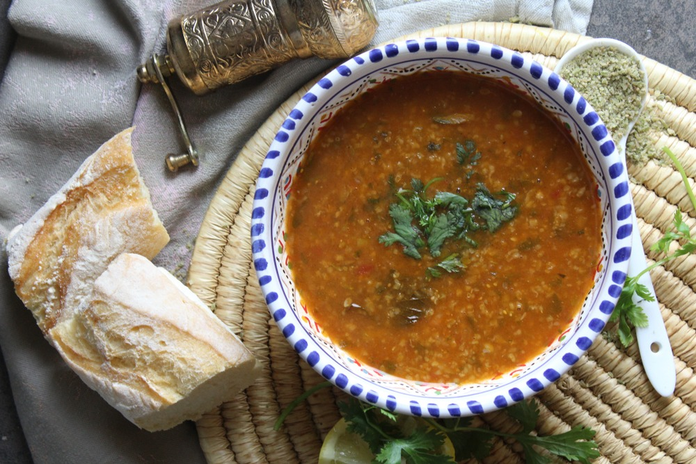

Chorba Frik

Chorba Frik is a delicious traditional Algerian soup, prepared with a crushed green wheat called Frik (also known as Freekeh).
This soup is rich in flavour and packed with nutrients. It is often served at Iftar during the month of Ramadan, to re-introduce food to the stomach after fasting.
Recipes for this soup are passed through generations and vary between families. This recipe includes a range of vegetables, making it a hearty and healthy variation.
- 1 carrot
- 1 courgette
- 1 branch of celery
- 1 medium/large potato
- 1 onion
- 1 400g tin of chopped tomatoes
- Spices: salt, pepper, chilli powder, cinnamon powder
- Meat of your choice (lamb, mutton, beef, chicken), cubed
- 1 400g tin of chickpeas
- Dried frik
- 1 litre of water
- Fresh coriander
- Lemons, to serve
- Finely grate the carrot, courgette, celery and potato.
- Dice the onion and add to a large saucepan, add the tin of tomatoes and lightly mash to combine.
- Add the grated vegetables to the pan with the onion/tomato mix and simmer for a few minutes.
- Add the pepper, salt, chilli powder and 1 teaspoon of the cinnamon.
- After a few minutes, add the meat t the pan.
- Fill the pan with water and bring to a boil. Once boiling, turn down to a simmer and leave to cook for a few hours, stirring occasionally to avoid the soup sticking to the bottom of the pan.
- Drain the chickpeas and add to the soup.
- Use a food processor or blender to grind the frik to a finer consistency. Add to the soup and cook for 10 minutes.
- Serve with coriander and lemon juice to taste.